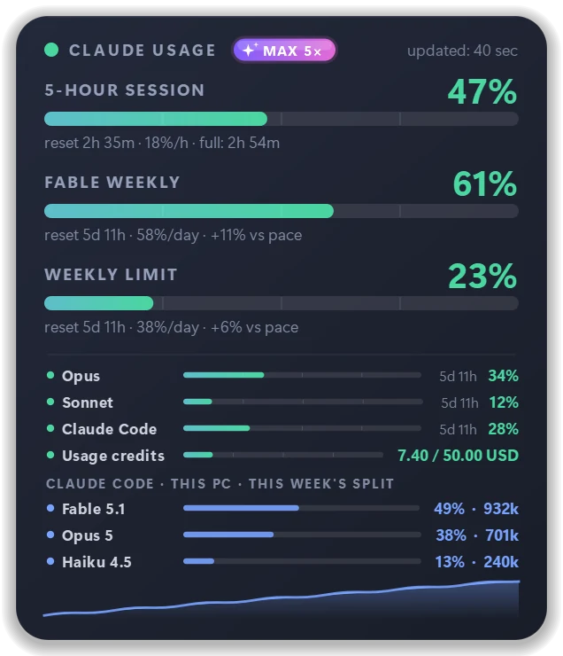
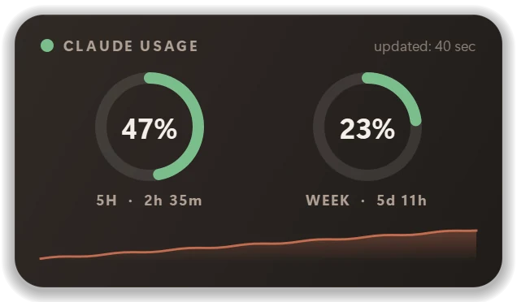
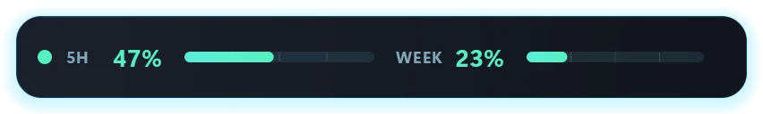
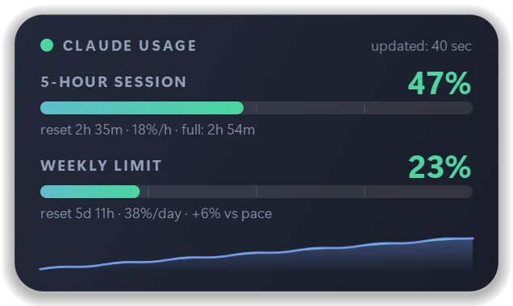
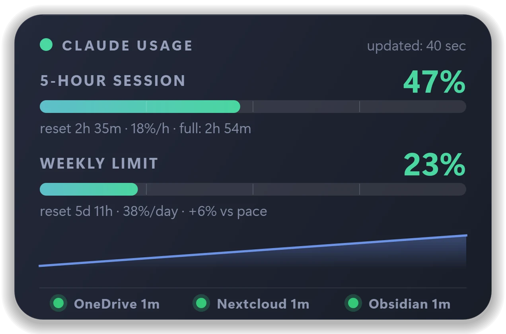
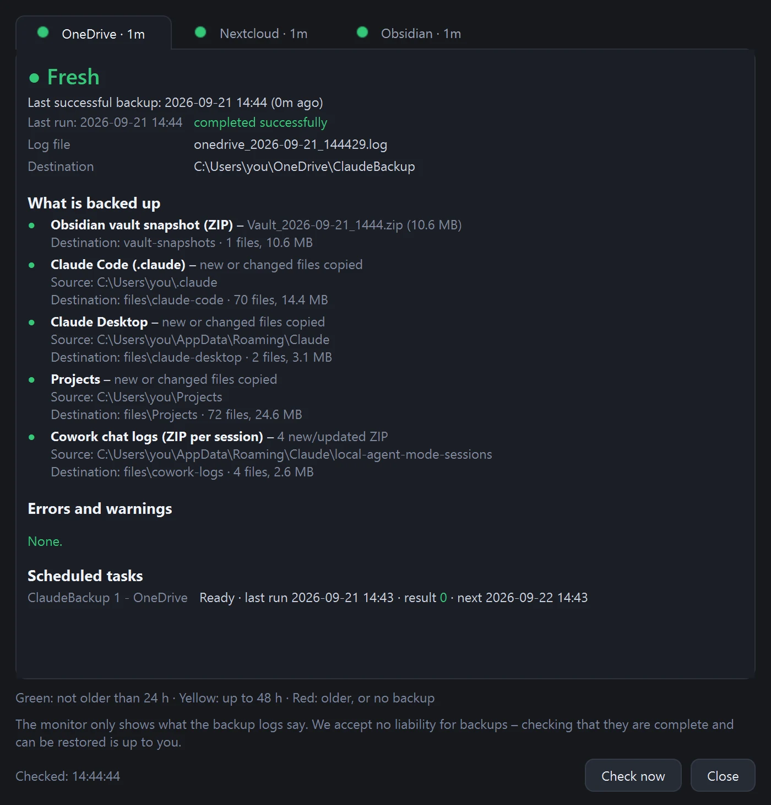
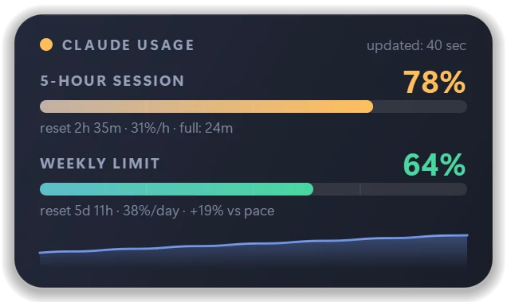
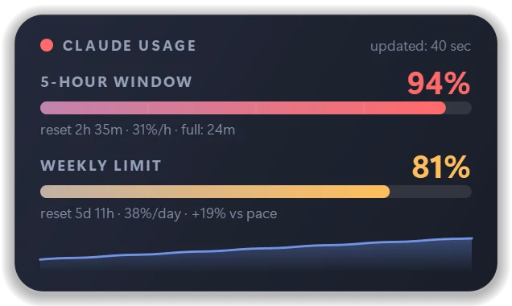
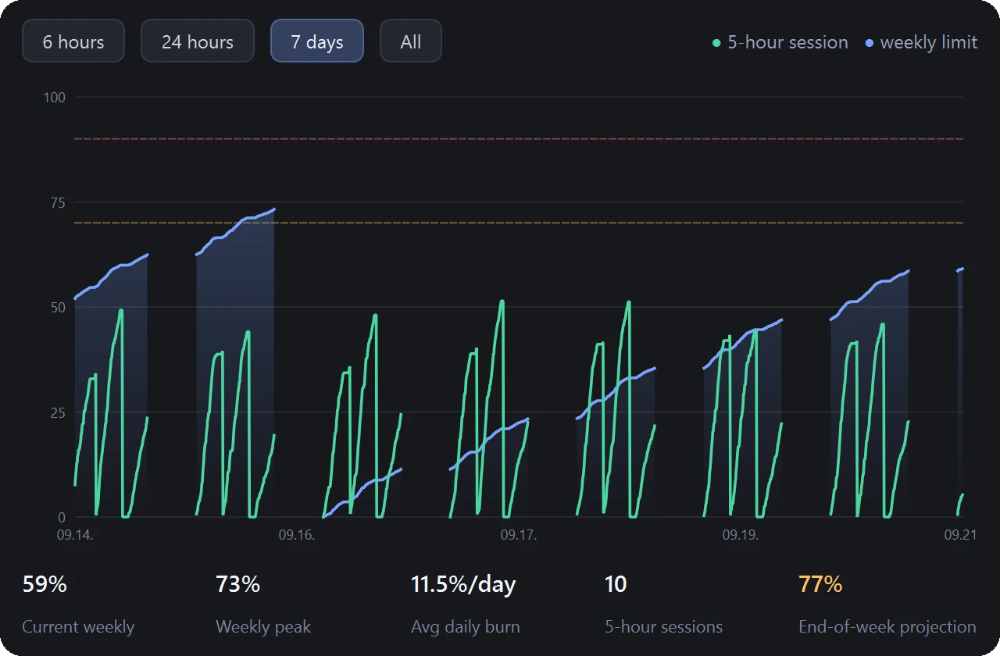

ローカルのログだけを読むツール
- スマートフォンでの使用分は見えない
- ブラウザーでの使用分は見えない
- ほかのパソコンの分は見えない
- このパソコンの Claude Code の分だけは見える
- リセット時刻は推測にすぎない
完全無料バージョン 2.7.1Windows + macOS
画面の最前面に常駐する小さなウィジェットが、Claude の使用量をリアルタイムで表示します。5時間セッション、週間上限、そして消費ペースまで。スマートフォンで使った分もきちんと反映されます。Windows と macOS に対応。
ずっと無料。デモ版でも、期間限定の試用版でもありません。使えない機能もゼロです。
0 回ダウンロードされました（このページから）



アプリの実際の画面です（数値はデモ用）。
ログを読むだけのツールとの違い
多くの使用量トラッカーはパソコン上のログファイルを読むため、わかるのはそのパソコン1台で使った分だけです。Claude Usage Monitor は Anthropic のサーバーに直接問い合わせることもでき、アカウント全体の実際の数値を表示します。スマートフォンのアプリ、ブラウザー、別のパソコン、Claude Code での使用分もすべて合算され、デスクトップの1か所でまとめて確認できます。

設定方法：データソースで「claude.ai（すべてのデバイス）」を選び、お使いのブラウザーで一度だけサインインします。Claude Code と同じサインイン方法で、アプリがパスワードを目にすることはありません。サインインしない場合は Claude Desktop のローカルログを読み取るため、対象はこのパソコンだけになります。
+1 おまけ機能。もちろん無料
使用量トラッカーはどれも、数値を表示するところで終わりです。Claude Usage Monitor はもう一歩踏み込み、Claude 関連のバックアップが新しいかどうかも表示します。対象は、スキル、CLAUDE.md のルール、プロジェクトのメモリ、MCP の設定、エージェントの会話ログ、Obsidian のノート。これらはたいてい1台のディスクにしか保存されていません。ドライブの故障、ノートパソコンの盗難、うっかり削除。どれか1つで、何か月分もの作業が消えてしまいます。パネルの3つの小さなランプが、そんな事態にはなっていないことを一日中いつでも知らせてくれます。

ランプは OneDrive（1つ目のコピー）、Nextcloud（独立した2つ目のクラウド。rclone が対応するクラウドなら何でも可）、Obsidian（保管庫の日付付きスナップショット）の3つです。カウントされるのは最後まで完了した実行だけ。失敗した実行、中断された実行、テスト実行でランプが緑になることはありません。時間のしきい値は変更できます。各ランプをクリックすると詳細が表示されます。

モニターは読み取るだけで、ファイルの変更、移動、アップロードは一切行いません。5分ごとに自動で、または「今すぐ確認」でいつでも再確認します。OneDrive 上にしか存在しない（オンライン専用の）スナップショットを、一覧表示のためだけにダウンロードすることはありません。
Claude Usage Monitor 自体はファイルをコピーしません。コピーがうまくいったかどうかを表示するだけです。コピーを担うのは Claude Backup Kit。1行ずつ読んで確かめられる、短い PowerShell スクリプトのセットです。Claude での作業内容を毎日 OneDrive と独立した2つ目のクラウドにバックアップし、ランプが読み取るログを書き出します。アカウント不要、サブスクリプション不要、こちらに送信されるデータもありません。
ダウンロードすると、利用規約に同意したものとみなされます。アプリと Backup Kit は無料で「現状のまま」提供され、いかなる保証もなく、ご利用は自己責任となります。
必要な項目だけ開いてください。何を使い、何を設定し、どこをクリックするか、すべての手順をここにまとめました。キットは自由に変更できる出発点です。上記の免責事項を必ずお読みください。
rclone-backup と入力 → 新しいアプリパスワードを作成。表示されるのは一度だけなので、必ずコピーしてください。これはアカウントのパスワードではなく、いつでも取り消せます。C:\Tools\ClaudeBackup）。config.psd1 を編集します。VaultPath = Obsidian 保管庫（空欄 = Obsidian を使わない）、ExtraFolders = そのほかにバックアップしたいもの、NextcloudRemote と NextcloudBasePath = 2つ目のクラウド（空欄 = 使わない）、DailyTime = 実行する時刻。それ以外はそのままでかまいません。Set-ExecutionPolicy -Scope CurrentUser RemoteSigned、cd C:\Tools\ClaudeBackup、Unblock-File *.ps1、.\Install-BackupKit.ps1 を順に実行します。インストーラーは必要に応じて rclone をインストールし、クラウドのアドレス、ユーザー名、アプリパスワード（入力内容は非表示）を尋ね、2つのスケジュールされたタスクを作成し、モニターに参照先を伝えたうえで、初回の実行を行います。.\Backup-Step2-Cloud.ps1 を実行します。インストーラーが行ったのは、クラウドへのアップロード（ステップ2）のテスト実行だけです。.\Test-BackupKit.ps1 を実行し、すべての行に [OK] と表示されれば成功です。Claude Usage Monitor では、パネルを右クリック → バックアップ状態バー。5分以内に3つのランプが緑になります。すぐに確認するには バックアップ… → 今すぐ確認。%USERPROFILE%\.claude）：スキル、設定、CLAUDE.md、プロジェクトのメモリ、プラグイン。%APPDATA%\Claude）：設定と MCP サーバー。config.psd1 に記載したもの。.credentials.json）、Claude Desktop の Cookie とキャッシュ、再ダウンロードできる大きな VM イメージ。| パネルにバックアップ状態バーを表示 | 3つのランプのオン・オフを切り替えます。右クリックメニューのバックアップ状態バーからも切り替えられます。 |
|---|---|
| ランプ | 表示するランプ：OneDrive、Nextcloud、Obsidian。Obsidian の保管庫がない場合はチェックを外してください。 |
| ランプの横のラベル | 名前と経過時間 · 名前のみ · ランプのみ。 |
| 緑: 最長 / 黄: 最長 | 経過時間のしきい値（時間単位）。既定値は24と48です。週1回のバックアップなら170と340に設定します。 |
| バックアップフォルダー | ステップ1の書き込み先フォルダー（例：OneDrive\ClaudeBackup）。自動のままにしておいてください。インストーラーがモニターに設定済みです。 |
| バックアップスクリプトの構成ファイル | キットの config.psd1。モニターはここから保管庫のパスとクラウドの保存先を読み取ります。パスワードは一切読み取りません。 |
| スケジュールされたタスクのフィルター | ClaudeBackup*：詳細ウィンドウに一覧表示する Windows タスク。 |
| 詳細ウィンドウの表示内容 | 見たい項目にチェックを入れます：バックアップ対象、内容、エラーと警告、スケジュールされたタスク、ログ。 |
インストーラーは %APPDATA%\ClaudeUsageMonitor\backup_profile.json を書き出します。中身はフォルダーのパスだけで、パスワードやトークンは含みません。「バックアップ」タブで設定した内容は、このファイルより優先されます。
.claude\settings.json には、MCP サーバーの API キーが含まれている場合があります。これらは復元に必要なため、ご自身の OneDrive とご自身のクラウドにバックアップされます。両方のアカウントを2段階認証で保護してください。| ノートの以前のバージョン | onedrive.com → ファイルを右クリック → バージョン履歴。 |
|---|---|
| 削除したファイル | OneDrive のごみ箱（30日間）または Nextcloud の削除済みファイル。 |
| 特定の日の保管庫全体 | vault-snapshots\Vault_…zip を空のフォルダーに展開し、Obsidian のフォルダを保管庫として開くで開きます。 |
| Claude Code のスキルと設定 | files\claude-code を %USERPROFILE%\.claude にコピーして戻し、Claude Code にもう一度サインインします。 |
| Claude Desktop の設定 | Claude Desktop を終了し、files\claude-desktop を %APPDATA%\Claude にコピーして戻します。 |
logs サブフォルダーに、onedrive_YYYY-MM-DD_HHMMSS.log および nextcloud_…log という名前で保存し、各行を日付と時刻で始めます。KESZ を含む行で、失敗した実行は HIBAVAL ZARULT を含む行で終わらせます。モニターが認識するキーワードは、キットの Common.ps1 にすべて記載されています。backup_profile.json で指定できます。方法はキットの README をご覧ください。Claude Usage Monitor は、Claude（クロード）のサブスクリプションの使用制限をリアルタイムで表示する、Windows 10/11・macOS 向けの無料オープンソースのデスクトップウィジェットです。5時間セッション、週間上限、モデル別の週間上限を、それぞれのリセットまでの残り時間とともに表示します。ほかのウィンドウより常に手前に表示されるので、「設定 → 使用状況」を開いたりターミナルを使ったりしなくても、Claude の使用量を確認できます。
Windows と Mac の両方で使える1つのアプリです。claude.ai、Claude Desktop、Claude Code など、プランの使用量にカウントされるものはすべて、お使いのすべてのデバイスの分まで対象になります。ターミナル用ツールの「Claude Code Usage Monitor」とは別物です。こちらは通知領域のアイコンを備えたグラフィカルなパネルで、コマンドラインは必要ありません。
主な機能
緑、黄、赤。上限に達するずっと前に、パネルの色が変わります。リセットまでのカウントダウンと、100%に達する時刻の予測も表示します。


ペース表示で、週の経過よりも速く週間上限を消費していないかがわかります。週の終わりにどこまで達するかの予測も表示します。
Claude Code と同じように、お使いのブラウザーでサインインするだけ。スマートフォン、ブラウザー、ほかのすべてのパソコンでの使用量も確認できます。
Fable、Opus、Sonnet、Claude Code、使用クレジットなど、サーバーが返すすべての上限に加え、今週のモデル別の内訳も表示します。
70%と90%（変更可能）に達したとき、そして上限がリセットされたときに、控えめに通知します。それ以外の通知は一切ありません。
ウィジェットをダブルクリックすると、両方の上限を1本のタイムラインで表示します（6時間、24時間、7日間）。週間ピーク、1日あたりの平均、そして上限を超えそうになると色が変わる週の終わりの予測も確認できます。

テレメトリなし、アクセス解析なし、当方へのアカウント登録なし。通信先は Anthropic だけで、取得するのはあなた自身の数値だけです。サインイントークンは Windows の DPAPI または macOS のキーチェーンで暗号化され、お使いのパソコンに保存されます。
試用期限なし。「Pro 版」への誘導なし。裏もありません。ダウンロードすれば、ずっとあなたのものです。
気になる方へ
Claude Desktop がパソコンにすでに書き出している使用量ログを読み取ります。外部には何も送信しません。対象はこのパソコンだけで、更新は約5分ごとです。
Claude Code と同じ、ブラウザーでのサインインを使います。埋め込みブラウザーは使わず、アプリにパスワードを入力することもありません。リセット時刻はサーバーから正確に取得し、約2分ごとに更新します。
| ドラッグ | パネルを移動（画面の端にスナップ） |
|---|---|
| 右クリック | メニュー：レイアウト、テーマ、サイズ、言語、設定 |
| ダブルクリック | 履歴と統計ウィンドウ |
| Ctrl + ホイール | サイズ変更 |
| 通知領域のアイコンをクリック | パネルの表示 / 非表示 |
| Claude Usage Monitor | Claude の「設定 → 使用状況」ページ | Claude Code のログを読むターミナルツール | |
|---|---|---|---|
| 作業中も常に見える | はい。常に手前に表示されるウィジェットと通知領域のアイコン | いいえ。毎回開く必要があります | ターミナルを開いているときのみ |
| Windows と macOS | はい。1つのアプリで両方に対応 | はい（ウェブページ） | ツールによる。コマンドライン |
| ターミナルが必要 | いいえ | いいえ | はい |
| すべてのデバイスの claude.ai、Claude Desktop、Claude Code を集計 | はい（claude.ai にサインインした場合） | はい | いいえ。このパソコンの Claude Code のみ |
| ペース、消費速度、週の終わりの予測 | はい | いいえ | 一部のみ |
| 自分で決めたしきい値でのアラート | はい（既定は70% / 90%） | いいえ | まれ |
| 価格 | 無料、オープンソース（MIT） | プランに含まれる | ほとんどが無料 |
自分好みに
深い青のガラスに、クールな光。既定のテーマです。落ち着いていて読みやすく、どんなダーク系のデスクトップにもなじみます。
さらに、好みのアクセントカラー、70%～200%のサイズ、不透明度も設定できます。
料金
ダウンロード
Windows 10 / 11 · 64-bit
INSTALL.bat をダブルクリックします。管理者権限は不要です。「Windows によって PC が保護されました」と表示された場合は、「詳細情報」→「実行」をクリックしてください。アプリはオープンソースですが、コード署名はされていません。
1a4d92890906f8f76b68ec584d16342b0eeee6ff07c23359efa1ba60203bd974PowerShell: Get-FileHash .\ClaudeUsageMonitor-Setup-*.zip
macOS 12 or newer · Apple Silicon
0 回ダウンロードされました（このページから） · Windows 0 · macOS 0
ダウンロードすると、利用規約に同意したものとみなされます。アプリと Backup Kit は無料で「現状のまま」提供され、いかなる保証もなく、ご利用は自己責任となります。
これらのボタンは常に最新リリースにつながっています。一度インストールすれば、あとはアプリが自動で最新の状態を保ちます。
活発に開発中
リリースノートは英語とハンガリー語で書かれています。
届くのはリリース情報だけ。1バージョンにつき数行の短いお知らせです。宣伝メールは一切送りません。配信停止はワンクリックで。
こんな方におすすめ
0 / 5 · アプリ内から寄せられた評価: 0
ここに掲載されるのは、送信者が公開に同意し、作者が目を通したメッセージだけです。アプリをお使いですか？パネルを右クリック →開発者へのメッセージ…から、評価とご感想をお寄せください。
「自分のために作りました。作業の途中で何度も上限に達してしまったからです。それから、一日中眺めていても気持ちよく使えるまで磨き上げました。こういうツールは無料であるべきだと思うので、無料にしています。ぜひ使って、楽しんで、感想を聞かせてください。」
FAQ
本当に無料で、裏はありません。デモ版でも試用版でも機能限定版でもなく、これが唯一の完全版です。広告も有料プランもデータ収集もありません。ソースコードは MIT ライセンスで公開しています。
Claude Usage Monitor をインストールしてください。5時間セッション、週間上限、モデル別の上限を、常に手前に表示される小さなウィジェットと、通知領域またはメニューバーのパーセント表示で、いつでも画面に表示します。Claude 自身の数値は「設定 → 使用状況」で確認できますが、このウィジェットなら同じ上限をクリックせずに確認できます。
セッションベースの使用制限は5時間ごとにリセットされます。週間上限は、Anthropic がアカウントごとに割り当てた毎週決まった時刻にリセットされるため、人によって異なります。ウィジェットは両方のリセットまでの残り時間をリアルタイムでカウントダウンし、claude.ai にサインインしている場合は Anthropic のサーバーから取得した正確な時刻を使います。
はい。Anthropic によると、claude.ai、Claude Desktop、Claude Code での使用量は、すべて同じ使用制限にカウントされます。そのため、ウィジェットの claude.ai モードでは、実行中のパソコンだけでなく、すべてのデバイスとアプリを合計した1つの数値を表示します。
いいえ。「Claude Code Usage Monitor」は、別の作者によるターミナルベースの別のツールです。Vidovics Gábor による Claude Usage Monitor は、Windows と macOS 向けのグラフィカルなデスクトップウィジェットで、通知領域のアイコン、テーマ、アラートを備え、コマンドラインは必要ありません。
パネルを右クリックして「開発者へのメッセージ…」を選ぶか、パネルのヘッダーにあるメッセージアイコンをクリックしてください。星1～5の評価とメッセージを送ることができ、チェックを入れた場合に限り、評価と名前をこのウェブサイトに掲載することを許可できます。メッセージはすべて作者の Vidovics Gábor が読み、同意なしに公開されることはありません。アプリをお持ちでない場合は、このページ下部のフォームをご利用ください。
34言語に対応しています。欧州連合（EU）のすべての公用語に加え、日本語、韓国語、簡体字中国語、繁体字中国語、インドネシア語、ベトナム語に対応し、ポルトガル語はヨーロッパ版とブラジル版、スペイン語はスペイン版と中南米版をそれぞれ用意しています。アプリはシステムの言語を自動で選択し、このウェブサイトもこれらすべての言語で公開しています。
はい。お使いの Claude プラン（Pro、Max 5×、Max 20×、Team、Enterprise）の上限、つまり Claude の「設定 → 使用状況」に表示されるのと同じ上限を表示します。パネルのヘッダーのプランバッジで、現在のプランもひと目でわかります。
はい、しかもこちらも無料です。バックアップ状態バーをオンにすると、パネルの3つのランプが、OneDrive、Nextcloud などの2つ目のクラウド、Obsidian 保管庫のバックアップが新しいかどうかを示します。24時間以内なら緑、48時間以内なら黄、それより古いか存在しない場合は赤、直近の実行が失敗した場合は赤いリングが表示されます。モニターはバックアップのログを読み取るだけで、バックアップそのものは無料の Claude Backup Kit が行います。キットは Claude Code のスキル、CLAUDE.md、プロジェクトのメモリ、Claude Desktop の設定、エージェントのログを毎日コピーします（サインイントークンはコピーしません）。キットは誰でも変更できる無料の出発点であるため、バックアップについて当方は一切の責任を負いません。バックアップが完全で復元可能であることの確認は、各ユーザーの責任です。
いいえ。Vidovics Gábor が開発した、独立したコミュニティツールです。Anthropic とは提携関係にありません。「Claude」は Anthropic, PBC の商標です。
一切ありません。サインインしない場合は、Claude Desktop のローカルログを読み取ります。すべてのデバイスを対象にしたい場合は、お使いのブラウザーで claude.ai にサインインします。アプリがパスワードを目にすることはありません。
アプリにコード署名がされていないためです（証明書は有料ですが、アプリは無料です）。「詳細情報」→「実行」をクリックしてください。ダウンロードしたファイルは SHA-256 チェックサムで検証でき、ソースコードも GitHub で確認できます。
macOS 12 以降に対応しています。現在のビルドがどのプロセッサ向けかは、上のダウンロードカードに常に表示されています。macOS 版はリリースされたばかりなので、ご意見を大歓迎します。
アプリは1日に数回このサイトを確認し、新しいバージョンがあればお知らせします。ワンクリックでダウンロード、検証、インストールを行い、再起動します。この機能はオフにできます。
Windows：設定 → アプリ → インストールされているアプリ → Claude Usage Monitor → アンインストール。macOS：アプリをゴミ箱にドラッグします。それだけです。
作者に直接メッセージ
メッセージは作者である私、Vidovics Gábor に直接届き、すべてに目を通しています。返信をご希望の場合のみ、メールアドレスをご記入ください。
メッセージは、返信とアプリの改善のためだけに使用します。詳しくはプライバシーポリシーをご覧ください。
ずっと無料。デモ版でも、期間限定の試用版でもありません。使えない機能もゼロです。